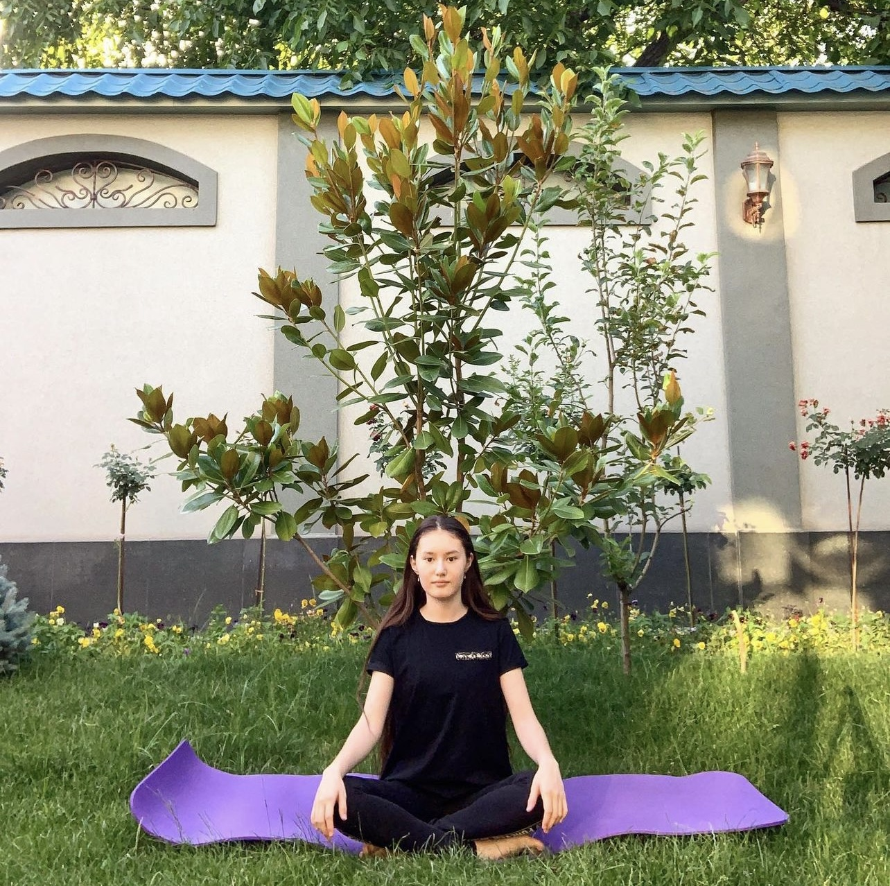

Me & Sport
 How it all started...
I am doing I am doing sports since 2019. It just all started with basic meditation, and then I started to explore more types of sports. When I was watching YouTube videos of productive and successful bloggers, they were every morning meditating, running, and going to the gym. I wanted to achieve the same results as they achieved, so I started doing a little research.
I found out that:
Mindfulness meditation can also lower the levels of cortisol — the stress hormone —which helps you feel more relaxed.
This was what I needed!
With all of the studying and extracurricular activities that I had, at the end of the day, I would feel anxious and tired. I was afraid to burn out and lose my motivation, so meditation seemed like a solution to me.
While doing meditation, I also decided to run, ride a bike, and swim. Obviously, I could not do all of this in one day, so I had to come up with a schedule. I decided that every day I will do sport for one hour while combining all of them. I came up with a schedule that works perfectly for me...